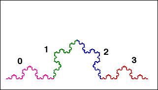

| Using the standard decomposition ofthe Koch curve into four parts, we can assign addresses 0, 1, 2, and 3 to those parts. |
|  |
| Parts of parts have corresponding addresses. |
| Points where parts join have
multiple
addresses. For example, the right-most point of part 0 has address |
| As an application of this addressing notion, we show that at no point of the Koch curve can a tangent be defined. |
|
|
|
Return to basc questions.